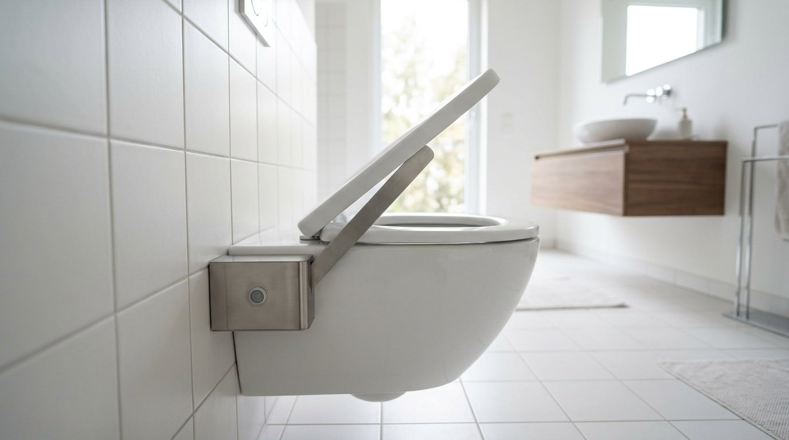
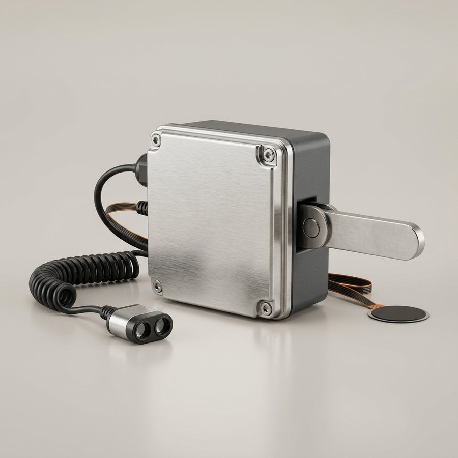

<meta charset="utf-8">
<meta name="viewport" content="width=device-width, initial-scale=1, viewport-fit=cover">
<title>AutoLID</title>
<meta name="claude:viewport-fit-sides" content="cover">
<link rel="preconnect" href="https://fonts.googleapis.com">
<link rel="preconnect" href="https://fonts.gstatic.com" crossorigin>
<link rel="stylesheet" href="https://fonts.googleapis.com/css2?family=Archivo:wdth,wght@100..125,500..800&family=Atkinson+Hyperlegible:ital,wght@0,400;0,700;1,400&family=JetBrains+Mono:wght@400;600&display=swap">
<style>
/* Layout: ficha técnica de producto. Una demo en vivo arriba, después la ficha en bandas, con datos en mono. */
:root {
  --porcelana: #f4f6f4;      /* fondo: loza blanca, apenas verdosa */
  --superficie: #e4e9e7;     /* paneles: acero satinado claro */
  --linea: #c7d0cd;
  --tinta: #12202a;          /* texto principal */
  --tinta-suave: #4b5b64;
  --eco: #08798c;            /* acento: la onda del ultrasonido */
  --eco-suave: #08798c1f;
  --bloqueo: #b9440f;        /* FSR: alguien sentado, cierre bloqueado */
  --ok: #2d7a4f;
  --acero: #a3adb2;
  --loza: #ffffff;
  --display: "Archivo", "Arial Narrow", system-ui, sans-serif;
  --texto: "Atkinson Hyperlegible", "Segoe UI", system-ui, sans-serif;
  --mono: "JetBrains Mono", ui-monospace, "Cascadia Mono", monospace;
  --radio: 14px;
  color-scheme: light;
}
@media (prefers-color-scheme: dark) {
  :root:not([data-theme="light"]) {
    --porcelana: #0d1316; --superficie: #172126; --linea: #2a3840; --tinta: #e7eef0; --tinta-suave: #9eb0b8;
    --eco: #3ec3d8; --eco-suave: #3ec3d824; --bloqueo: #f0884e; --ok: #5cc48a; --acero: #6f7e86; --loza: #dfe6e8;
    color-scheme: dark;
  }
}
:root[data-theme="dark"] {
  --porcelana: #0d1316; --superficie: #172126; --linea: #2a3840; --tinta: #e7eef0; --tinta-suave: #9eb0b8;
  --eco: #3ec3d8; --eco-suave: #3ec3d824; --bloqueo: #f0884e; --ok: #5cc48a; --acero: #6f7e86; --loza: #dfe6e8;
  color-scheme: dark;
}

* { box-sizing: border-box; }
[hidden] { display: none !important; }
html { scroll-behavior: smooth; }
@media (prefers-reduced-motion: reduce) { html { scroll-behavior: auto; } }
body {
  background: var(--porcelana); color: var(--tinta);
  font-family: var(--texto); font-size: 1.0625rem; line-height: 1.6;
  padding-left: max(16px, env(safe-area-inset-left, 0px));
  padding-right: max(16px, env(safe-area-inset-right, 0px));
}
body::before { content: ""; position: fixed; inset: 0 0 auto; height: env(safe-area-inset-top, 0px); z-index: 10; background: var(--porcelana); }
.ancho { max-width: 1160px; margin-inline: auto; }
h1, h2, h3 { font-family: var(--display); font-stretch: 112%; line-height: 1.08; text-wrap: balance; margin: 0; }
h2 { font-size: clamp(1.8rem, 3.4vw, 2.6rem); font-weight: 750; letter-spacing: -0.01em; }
h3 { font-size: 1.2rem; font-weight: 700; font-stretch: 105%; }
p { margin: 0; }
a { color: var(--eco); }
:focus-visible { outline: 3px solid var(--eco); outline-offset: 3px; border-radius: 4px; }
.etiqueta { font-family: var(--mono); font-size: 0.78rem; letter-spacing: 0.08em; text-transform: uppercase; color: var(--tinta-suave); }
.mono { font-family: var(--mono); font-variant-numeric: tabular-nums; }

/* ── Encabezado ── */
.barra {
  position: sticky; top: env(safe-area-inset-top, 0px); z-index: 5;
  background: color-mix(in srgb, var(--porcelana) 88%, transparent);
  backdrop-filter: blur(8px); border-bottom: 1px solid var(--linea);
  margin-inline: calc(-1 * max(16px, env(safe-area-inset-left, 0px)));
  padding-inline: max(16px, env(safe-area-inset-left, 0px));
}
.barra .ancho { display: flex; align-items: center; justify-content: space-between; gap: 16px; padding-block: 12px; }
.marca { font-family: var(--display); font-stretch: 125%; font-weight: 800; font-size: 1.35rem; letter-spacing: -0.01em; color: var(--tinta); text-decoration: none; }
.marca span { color: var(--eco); }
nav ul { display: flex; flex-wrap: wrap; gap: 4px 18px; list-style: none; margin: 0; padding: 0; }
nav a { color: var(--tinta-suave); text-decoration: none; font-size: 0.95rem; }
nav a:hover { color: var(--tinta); }
@media (max-width: 720px) { nav { display: none; } }

/* ── Hero ── */
.hero { display: grid; grid-template-columns: 1.05fr 1fr; gap: clamp(24px, 4vw, 56px); align-items: center; padding-block: clamp(32px, 6vw, 72px) 40px; }
.hero > * { min-width: 0; }
.hero h1 { font-size: clamp(2.5rem, 6vw, 4.6rem); font-weight: 800; font-stretch: 118%; letter-spacing: -0.02em; margin-block: 14px 18px; }
.hero h1 em { font-style: normal; color: var(--eco); }
.hero .bajada { font-size: 1.2rem; color: var(--tinta-suave); max-width: 34em; }
.datos { display: grid; grid-template-columns: repeat(4, minmax(0, 1fr)); gap: 0; margin-top: 28px; border-block: 1px solid var(--linea); }
.datos div { padding: 14px 12px 14px 0; }
.datos div + div { padding-left: 12px; border-left: 1px solid var(--linea); }
.datos b { display: block; font-family: var(--mono); font-size: 1.25rem; font-weight: 600; color: var(--tinta); white-space: nowrap; }
.datos span { font-size: 0.85rem; color: var(--tinta-suave); line-height: 1.3; display: block; }
.acciones { display: flex; flex-wrap: wrap; gap: 12px; margin-top: 26px; }
.boton { display: inline-flex; align-items: center; gap: 8px; font: 700 1rem var(--texto); padding: 12px 20px; border-radius: 999px; border: 2px solid var(--eco); background: var(--eco); color: var(--porcelana); text-decoration: none; cursor: pointer; }
.boton.sec { background: transparent; color: var(--eco); }
.boton:disabled { opacity: 0.45; cursor: not-allowed; }
.foto { margin: 0; border-radius: var(--radio); overflow: hidden; background: var(--superficie); aspect-ratio: 16 / 10; max-width: 100%; }
.foto img { width: 100%; height: 100%; object-fit: cover; display: block; }
.foto figcaption { font-size: 0.8rem; color: var(--tinta-suave); padding: 8px 12px; }
.hero figure.foto { aspect-ratio: auto; }
.hero figure.foto img { aspect-ratio: 16 / 9; }
@media (max-width: 860px) { .hero { grid-template-columns: 1fr; } .datos { grid-template-columns: repeat(2, minmax(0, 1fr)); } .datos div:nth-child(3) { padding-left: 0; border-left: 0; } .datos div:nth-child(n+3) { border-top: 1px solid var(--linea); } }

/* ── Bandas ── */
section { padding-block: clamp(48px, 7vw, 88px); border-top: 1px solid var(--linea); }
.cabeza { display: grid; gap: 12px; max-width: 46rem; margin-bottom: 36px; }
.cabeza p { color: var(--tinta-suave); font-size: 1.1rem; }

/* ── Demo ── */
.demo { display: grid; grid-template-columns: 1.35fr 1fr; gap: 20px; align-items: start; }
.demo > * { min-width: 0; }
.escena { background: var(--superficie); border-radius: var(--radio); padding: 12px; }
.escena svg { display: block; width: 100%; height: auto; }
.controles { display: grid; gap: 14px; padding: 6px 4px 4px; }
.controles label { font-weight: 700; display: flex; justify-content: space-between; gap: 12px; }
input[type="range"] { width: 100%; accent-color: var(--eco); height: 28px; }
.fila { display: flex; flex-wrap: wrap; gap: 10px; }
.panel { background: var(--superficie); border-radius: var(--radio); padding: 18px; display: grid; gap: 16px; }
.estado { display: inline-flex; align-items: center; gap: 10px; font-weight: 700; font-size: 1.1rem; }
.estado i { width: 12px; height: 12px; border-radius: 50%; background: var(--acero); flex: none; }
.estado[data-tono="eco"] i { background: var(--eco); box-shadow: 0 0 0 5px var(--eco-suave); }
.estado[data-tono="ok"] i { background: var(--ok); }
.estado[data-tono="bloqueo"] i { background: var(--bloqueo); }
.estado[data-tono="bloqueo"] { color: var(--bloqueo); }
.lecturas { display: grid; grid-template-columns: repeat(3, minmax(0, 1fr)); gap: 10px; }
.lecturas div { background: var(--porcelana); border-radius: 10px; padding: 10px 12px; }
.lecturas b { display: block; font-family: var(--mono); font-size: 1.35rem; font-weight: 600; font-variant-numeric: tabular-nums; }
.lecturas span { font-size: 0.8rem; color: var(--tinta-suave); }
.reloj { display: grid; gap: 6px; }
.reloj .pista { height: 8px; border-radius: 99px; background: var(--porcelana); overflow: hidden; }
.reloj .pista div { height: 100%; width: 0%; background: var(--eco); border-radius: 99px; }
.reloj[data-tono="bloqueo"] .pista div { background: var(--bloqueo); }
.reloj small { color: var(--tinta-suave); font-size: 0.85rem; min-height: 1.3em; }
.serie { font-family: var(--mono); font-size: 0.76rem; line-height: 1.55; background: #0b1215; color: #9fe6ef; border-radius: 10px; padding: 10px 12px; height: 11.5em; overflow: hidden; white-space: pre; overflow-x: auto; }
.serie .ev { color: #ffd08a; }
.serie-tit { display: flex; justify-content: space-between; align-items: baseline; gap: 8px; }
@media (max-width: 900px) { .demo { grid-template-columns: 1fr; } }

/* ── Intro: los tres cursores del equipo arman la portada ── */
.ib-capa { position: absolute; left: 0; top: 0; width: 100%; height: 100vh; overflow: hidden; z-index: 40; pointer-events: none; }
.ib-cursor { position: absolute; left: 0; top: 0; will-change: transform; transition: opacity 0.35s; }
.ib-cursor svg { display: block; width: 22px; height: 22px; filter: drop-shadow(0 1px 1.5px rgb(0 0 0 / 0.35)); transition: transform 0.12s; }
.ib-cursor.click svg { transform: scale(0.82); }
.ib-cursor span { position: absolute; left: 17px; top: 19px; font: 700 12px/1 var(--texto); background: currentColor; padding: 4px 8px; border-radius: 999px; white-space: nowrap; }
.ib-cursor span i { font-style: normal; color: var(--porcelana); }
.ib-caja { position: absolute; border: 1.5px dashed currentColor; background: color-mix(in srgb, currentColor 7%, transparent); border-radius: 6px; transition: opacity 0.4s; }
.ib-caja b { position: absolute; right: -2px; bottom: -25px; font: 600 11px/1 var(--mono); background: currentColor; padding: 4px 6px; border-radius: 4px; white-space: nowrap; }
.ib-caja b i { font-style: normal; color: var(--porcelana); font-variant-numeric: tabular-nums; }
.ib-caret { display: inline-block; width: 2px; height: 0.95em; background: var(--eco); vertical-align: -0.12em; margin-left: 1px; animation: ib-parpadeo 0.8s steps(1) infinite; }
@keyframes ib-parpadeo { 50% { opacity: 0; } }
.ib-oculto, .ib-pre .hero > * { visibility: hidden; }
.ib-revela { animation: ib-revela 0.7s cubic-bezier(0.2, 0.7, 0.2, 1) both; }
@keyframes ib-revela { from { clip-path: inset(0 0 100% 0); opacity: 0.3; } to { clip-path: inset(0 0 0 0); opacity: 1; } }
.ib-pop { animation: ib-pop 0.45s cubic-bezier(0.3, 1.6, 0.5, 1) both; }
@keyframes ib-pop { from { transform: scale(0.86); opacity: 0; } to { transform: none; opacity: 1; } }
.ib-saltar { position: fixed; z-index: 50; right: max(16px, env(safe-area-inset-right, 0px)); bottom: calc(16px + env(safe-area-inset-bottom, 0px)); background: var(--porcelana); }
.ib-repetir { font: inherit; color: var(--eco); background: none; border: 0; padding: 0; text-decoration: underline; cursor: pointer; justify-self: start; }

/* ── Video ── */
.spot { display: grid; grid-template-columns: 0.75fr 1.25fr; gap: clamp(20px, 3vw, 40px); align-items: center; }
.spot > * { min-width: 0; }
.video { margin: 0; border-radius: var(--radio); overflow: hidden; background: #05080a; box-shadow: 0 18px 40px -24px color-mix(in srgb, var(--tinta) 60%, transparent); }
.video video { display: block; width: 100%; height: auto; aspect-ratio: 16 / 9; max-width: 100%; background: #05080a; }
@media (max-width: 900px) { .spot { grid-template-columns: 1fr; } }

/* ── Público ── */
.tres { display: grid; grid-template-columns: repeat(3, minmax(0, 1fr)); gap: 0; border-top: 2px solid var(--tinta); }
.tres article { padding: 22px 22px 6px 0; display: grid; gap: 10px; align-content: start; }
.tres article + article { padding-left: 22px; border-left: 1px solid var(--linea); }
.tres .necesidad { color: var(--tinta-suave); }
.tres .solucion { font-weight: 700; }
@media (max-width: 820px) { .tres { grid-template-columns: 1fr; } .tres article + article { padding-left: 0; border-left: 0; border-top: 1px solid var(--linea); } }

/* ── Ciclo ── */
.ciclo { list-style: none; margin: 0; padding: 0; display: grid; grid-template-columns: repeat(4, minmax(0, 1fr)); gap: 16px; counter-reset: paso; }
.ciclo li { counter-increment: paso; background: var(--superficie); border-radius: var(--radio); padding: 20px; display: grid; gap: 8px; align-content: start; }
.ciclo li::before { content: "Paso " counter(paso); font-family: var(--mono); font-size: 0.78rem; letter-spacing: 0.08em; text-transform: uppercase; color: var(--eco); }
.ciclo li.alerta::before { color: var(--bloqueo); }
.ciclo .param { font-family: var(--mono); font-size: 0.9rem; color: var(--tinta); }
.ciclo p { color: var(--tinta-suave); font-size: 0.98rem; }
@media (max-width: 900px) { .ciclo { grid-template-columns: repeat(2, minmax(0, 1fr)); } }
@media (max-width: 520px) { .ciclo { grid-template-columns: 1fr; } }

/* ── Hardware ── */
.hw { display: grid; grid-template-columns: 0.8fr 1.2fr; gap: 32px; align-items: start; }
.hw > * { min-width: 0; }
.hw .foto { aspect-ratio: 1; }
.tabla { overflow-x: auto; }
table { width: 100%; border-collapse: collapse; font-size: 0.95rem; }
th, td { text-align: left; padding: 10px 12px 10px 0; border-bottom: 1px solid var(--linea); vertical-align: top; }
th { font-family: var(--mono); font-size: 0.74rem; letter-spacing: 0.07em; text-transform: uppercase; color: var(--tinta-suave); font-weight: 400; }
td.mono, td .mono { white-space: nowrap; }
.aviso { margin-top: 18px; border-left: 4px solid var(--bloqueo); padding: 10px 14px; background: color-mix(in srgb, var(--bloqueo) 9%, transparent); border-radius: 0 10px 10px 0; }
.aviso b { color: var(--bloqueo); }
@media (max-width: 860px) { .hw { grid-template-columns: 1fr; } .hw .foto { max-width: 420px; } }

.retro { display: grid; grid-template-columns: repeat(3, minmax(0, 1fr)); gap: 24px; margin-top: 40px; }
.retro div { display: grid; gap: 4px; }
.retro b { font-family: var(--mono); font-size: 1.6rem; font-weight: 600; color: var(--eco); }
@media (max-width: 700px) { .retro { grid-template-columns: 1fr; } }

/* ── Energía ── */
.barras { display: grid; gap: 14px; margin-top: 8px; }
.barra-e { display: grid; grid-template-columns: 11rem 1fr; gap: 12px; align-items: center; }
.barra-e .riel { height: 26px; background: var(--superficie); border-radius: 6px; overflow: hidden; }
.barra-e .riel div { height: 100%; background: var(--acero); border-radius: 6px; display: flex; align-items: center; justify-content: flex-end; padding-right: 8px; font-family: var(--mono); font-size: 0.8rem; color: var(--tinta); white-space: nowrap; }
.barra-e.opt .riel div { background: var(--eco); color: var(--porcelana); }
@media (max-width: 560px) { .barra-e { grid-template-columns: 1fr; gap: 4px; } }

/* ── Números ── */
.numeros { display: grid; grid-template-columns: 1fr 1fr; gap: 40px; }
.numeros > * { min-width: 0; }
.kpis { display: grid; grid-template-columns: repeat(2, minmax(0, 1fr)); gap: 0; border-top: 2px solid var(--tinta); }
.kpis div { padding: 16px 12px 16px 0; border-bottom: 1px solid var(--linea); }
.kpis div:nth-child(even) { padding-left: 16px; border-left: 1px solid var(--linea); }
.kpis b { display: block; font-family: var(--mono); font-size: 1.5rem; font-weight: 600; }
.kpis span { font-size: 0.88rem; color: var(--tinta-suave); }
.nota { font-size: 0.88rem; color: var(--tinta-suave); margin-top: 12px; }
@media (max-width: 860px) { .numeros { grid-template-columns: 1fr; } }

/* ── Historia ── */
.linea { list-style: none; margin: 0; padding: 0; display: grid; grid-template-columns: repeat(7, minmax(0, 1fr)); gap: 0; border-top: 2px solid var(--tinta); }
.linea li { padding: 14px 12px 0 0; display: grid; gap: 4px; align-content: start; position: relative; }
.linea li::before { content: ""; position: absolute; top: -7px; left: 0; width: 12px; height: 12px; border-radius: 50%; background: var(--porcelana); border: 2px solid var(--tinta); }
.linea li.fin::before { background: var(--eco); border-color: var(--eco); }
.linea li.descartado { color: var(--tinta-suave); }
.linea .cuando { font-family: var(--mono); font-size: 0.78rem; color: var(--tinta-suave); }
.linea b { font-size: 0.98rem; }
.linea span { font-size: 0.86rem; color: var(--tinta-suave); line-height: 1.4; }
@media (max-width: 980px) { .linea { grid-template-columns: 1fr; border-top: 0; border-left: 2px solid var(--tinta); } .linea li { padding: 0 0 18px 20px; } .linea li::before { top: 4px; left: -7px; } }

/* ── Equipo ── */
.equipo { display: grid; grid-template-columns: 1fr 1fr; gap: 40px; align-items: start; }
.equipo > * { min-width: 0; }
.personas { list-style: none; margin: 0; padding: 0; display: grid; gap: 0; border-top: 2px solid var(--tinta); }
.personas li { padding: 14px 0; border-bottom: 1px solid var(--linea); font-family: var(--display); font-stretch: 110%; font-weight: 700; font-size: 1.3rem; }
.contacto { background: var(--superficie); border-radius: var(--radio); padding: 22px; display: grid; gap: 12px; }
.correo { display: flex; flex-wrap: wrap; gap: 10px; align-items: center; }
.correo code { font-family: var(--mono); font-size: 1.05rem; background: var(--porcelana); padding: 8px 12px; border-radius: 8px; user-select: all; overflow-wrap: anywhere; }
@media (max-width: 820px) { .equipo { grid-template-columns: 1fr; } }

footer { border-top: 1px solid var(--linea); padding-block: 28px 40px; color: var(--tinta-suave); font-size: 0.9rem; display: grid; gap: 6px; }

/* ── SVG de la escena ── */
.s-piso { stroke: var(--linea); stroke-width: 2; }
.s-azulejo { stroke: var(--linea); stroke-width: 1; opacity: 0.7; }
.s-loza { fill: var(--loza); stroke: var(--tinta-suave); stroke-width: 2; }
.s-asiento { fill: var(--loza); stroke: var(--tinta-suave); stroke-width: 2; }
.s-tapa { fill: var(--loza); stroke: var(--tinta); stroke-width: 2.2; }
.s-caja { fill: var(--acero); stroke: var(--tinta); stroke-width: 2; }
.s-brazo { fill: var(--acero); stroke: var(--tinta); stroke-width: 1.5; }
.s-sensor { fill: var(--tinta); }
.s-ojo { fill: var(--superficie); stroke: var(--eco); stroke-width: 2; }
.s-cono { fill: var(--eco); opacity: 0.1; transition: opacity 0.2s; }
.s-cono.activo { opacity: 0.26; }
.s-limite { stroke: var(--eco); stroke-width: 1.5; stroke-dasharray: 5 5; }
.s-texto { fill: var(--tinta-suave); font-family: var(--mono); font-size: 12px; }
.s-texto.eco { fill: var(--eco); }
.s-fsr { fill: var(--acero); transition: fill 0.2s; }
.s-fsr.peso { fill: var(--bloqueo); }
.s-persona { fill: var(--tinta-suave); }
.s-onda { fill: none; stroke: var(--eco); stroke-width: 2; opacity: 0; }
</style>

<header class="barra">
  <div class="ancho">
    <a class="marca" href="#inicio">Auto<span>LID</span></a>
    <nav aria-label="Secciones">
      <ul>
        <li><a href="#spot">Video</a></li>
        <li><a href="#demo">Demo</a></li>
        <li><a href="#ciclo">Cómo funciona</a></li>
        <li><a href="#hardware">Hardware</a></li>
        <li><a href="#numeros">Números</a></li>
        <li><a href="#equipo">Equipo</a></li>
      </ul>
    </nav>
  </div>
</header>

<main class="ancho" id="inicio">
  <script>
    // Oculta la portada antes del primer pintado solo si la intro va a correr (evita un parpadeo).
    (() => {
      let vista = false;
      try { vista = sessionStorage.getItem("autolid-intro") === "1"; } catch (e) {}
      if (!vista && !location.hash && !matchMedia("(prefers-reduced-motion: reduce)").matches) {
        document.documentElement.classList.add("ib-pre");
        setTimeout(() => document.documentElement.classList.remove("ib-pre"), 4000);
      }
    })();
  </script>
  <div class="hero">
    <div>
      <p class="etiqueta">EEST N° 3 de San Antonio de Padua · 7° 1° · Electromecánica</p>
      <h1>La tapa del inodoro, <em>sin tocarla.</em></h1>
      <p class="bajada">AutoLID se instala sobre las bisagras de cualquier inodoro y abre y cierra la tapa solo. Un sensor de peso bajo el asiento impide que se cierre mientras alguien está sentado.</p>
      <div class="datos">
        <div><b>&lt; 60 cm</b><span>durante 3 s abre la tapa</span></div>
        <div><b>3 RPM</b><span>90° en 5 s, sin golpes</span></div>
        <div><b>30–60</b><span>días por carga de batería</span></div>
        <div><b>IP65</b><span>electrónica sellada</span></div>
      </div>
      <div class="acciones">
        <a class="boton" href="#demo">Probar la demo</a>
        <a class="boton sec" href="#spot">Ver el video</a>
      </div>
    </div>
    <figure class="foto">
      
      <figcaption>Imagen ilustrativa generada con Gemini. El prototipo físico está en armado.</figcaption>
    </figure>
  </div>

  <section id="spot" aria-labelledby="spot-tit">
    <div class="spot">
      <div class="cabeza" style="margin-bottom:0">
        <p class="etiqueta">Video · 42 segundos</p>
        <h2 id="spot-tit">Por qué AutoLID hace falta</h2>
        <p>Uno de cada diez argentinos vive con alguna discapacidad y más de cinco millones y medio tienen 65 años o más. En 42 segundos, el problema y cómo lo resuelve AutoLID.</p>
        <p class="nota">Datos: INDEC, Estudio Nacional sobre el Perfil de las Personas con Discapacidad (2018) y Censo 2022. Animación hecha en Blender; en el video la tapa abre más rápido que en el prototipo real (5 s).</p>
      </div>
      <figure class="video">
        <video id="spot-video" controls playsinline preload="metadata" poster="img/video_poster.jpg" width="1920" height="1080">
          <source src="video/autolid_publicidad.mp4" type="video/mp4">
          Tu navegador no puede reproducir este video.
        </video>
      </figure>
    </div>
  </section>

  <section id="demo" aria-labelledby="demo-tit">
    <div class="cabeza">
      <p class="etiqueta">Demo en vivo · misma lógica que el firmware</p>
      <h2 id="demo-tit">Acercate, sentate, andate</h2>
      <p>Mové a la persona con el control. La simulación corre la máquina de estados del código de AutoLID: espera 3 s antes de abrir, bloquea el cierre con el sensor de peso y cierra 5 s después de que te vas.</p>
    </div>
    <div class="demo">
      <div class="escena">
        <svg viewBox="0 0 640 340" role="img" aria-labelledby="escena-tit">
          <title id="escena-tit">Vista lateral de un inodoro con AutoLID y una persona que se acerca</title>
          <g>
            <line class="s-azulejo" x1="0" y1="90" x2="640" y2="90"/>
            <line class="s-azulejo" x1="0" y1="160" x2="640" y2="160"/>
            <line class="s-azulejo" x1="0" y1="230" x2="640" y2="230"/>
            <line class="s-piso" x1="0" y1="320" x2="640" y2="320"/>
          </g>
          <!-- cono del ultrasonido y límite de 60 cm -->
          <polygon id="cono" class="s-cono" points="282,206 414,152 414,262"/>
          <line class="s-limite" x1="414" y1="40" x2="414" y2="320"/>
          <text class="s-texto eco" x="420" y="54">60 cm</text>
          <circle id="onda1" class="s-onda" cx="282" cy="206" r="10"/>
          <circle id="onda2" class="s-onda" cx="282" cy="206" r="10"/>
          <!-- inodoro -->
          <rect class="s-loza" x="36" y="70" width="74" height="150" rx="12"/>
          <path class="s-loza" d="M110 182 H274 C274 238 246 268 214 280 L204 320 H136 L130 262 C112 246 110 216 110 182 Z"/>
          <rect class="s-asiento" x="112" y="174" width="164" height="10" rx="5"/>
          <rect id="fsr" class="s-fsr" x="160" y="171" width="44" height="5" rx="2.5"/>
          <!-- sensor frontal HC-SR04 -->
          <rect class="s-sensor" x="268" y="196" width="14" height="22" rx="3"/>
          <circle class="s-ojo" cx="275" cy="201" r="3.6"/>
          <circle class="s-ojo" cx="275" cy="213" r="3.6"/>
          <!-- módulo AutoLID en la bisagra -->
          <rect class="s-caja" x="76" y="134" width="46" height="38" rx="6"/>
          <!-- tapa + pletina (gira alrededor de la bisagra) -->
          <g id="tapa" transform="rotate(0 118 172)">
            <rect class="s-tapa" x="118" y="160" width="160" height="12" rx="6"/>
            <rect class="s-brazo" x="112" y="162" width="34" height="7" rx="3"/>
          </g>
          <!-- persona de pie -->
          <g id="persona-pie" transform="translate(500 0)">
            <circle class="s-persona" cx="0" cy="116" r="17"/>
            <rect class="s-persona" x="-17" y="138" width="34" height="108" rx="15"/>
            <rect class="s-persona" x="-13" y="240" width="26" height="80" rx="9"/>
          </g>
          <!-- persona sentada -->
          <g id="persona-sentada" hidden>
            <circle class="s-persona" cx="166" cy="98" r="17"/>
            <rect class="s-persona" x="148" y="118" width="34" height="62" rx="14"/>
            <rect class="s-persona" x="160" y="158" width="78" height="22" rx="10"/>
            <rect class="s-persona" x="218" y="166" width="22" height="154" rx="9"/>
          </g>
          <text class="s-texto" x="40" y="60">AutoLID</text>
          <text class="s-texto" x="236" y="236">HC-SR04</text>
          <text class="s-texto" x="150" y="196" id="fsr-tag">FSR</text>
        </svg>
        <div class="controles">
          <label for="dist"><span>Distancia de la persona</span><span class="mono" id="dist-txt">120 cm</span></label>
          <input id="dist" type="range" min="0" max="150" step="1" value="120" aria-describedby="dist-ayuda">
          <small id="dist-ayuda" class="etiqueta" style="text-transform:none;letter-spacing:0">Llevala a menos de 60 cm y esperá 3 segundos.</small>
          <div class="fila">
            <button class="boton" id="sentar" type="button" disabled>Sentarse</button>
            <button class="boton sec" id="velocidad" type="button" aria-pressed="false">Velocidad ×1</button>
            <button class="boton sec" id="reiniciar" type="button">Reiniciar</button>
          </div>
        </div>
      </div>

      <div class="panel" aria-live="polite">
        <div>
          <p class="etiqueta">Estado</p>
          <p class="estado" id="estado" data-tono="neutro"><i></i><span id="estado-txt">Reposo: tapa cerrada</span></p>
        </div>
        <div class="lecturas">
          <div><b id="l-dist">120</b><span>HC-SR04 · cm</span></div>
          <div><b id="l-servo">0°</b><span>DS3218 · ángulo</span></div>
          <div><b id="l-fsr">0</b><span>FSR 402 · A0</span></div>
        </div>
        <div class="reloj" id="reloj">
          <div class="pista"><div id="reloj-barra"></div></div>
          <small id="reloj-txt">Nadie cerca.</small>
        </div>
        <div>
          <div class="serie-tit"><p class="etiqueta">Monitor serie · 9600 baudios</p><span class="etiqueta mono" id="reloj-sim">t = 0,0 s</span></div>
          <div class="serie" id="serie" aria-hidden="true">AutoLid iniciado.</div>
        </div>
      </div>
    </div>
  </section>

  <section id="problema" aria-labelledby="problema-tit">
    <div class="cabeza">
      <p class="etiqueta">Para quién es</p>
      <h2 id="problema-tit">Tres públicos con el mismo problema: tocar la tapa</h2>
      <p>Los inodoros inteligentes importados resuelven esto, pero cuestan miles de dólares y piden obra y 220 V en el baño. AutoLID se agrega al inodoro que ya está.</p>
    </div>
    <div class="tres">
      <article>
        <p class="etiqueta">Perfil A · Accesibilidad</p>
        <h3>Adultos mayores y movilidad reducida</h3>
        <p class="necesidad">Agacharse para levantar una tapa de 0,5 a 1 kg cuesta, duele y es riesgo de caída.</p>
        <p class="solucion">La tapa sube sola con 20 kg·cm de fuerza. Cero esfuerzo.</p>
      </article>
      <article>
        <p class="etiqueta">Hogares · Higiene</p>
        <h3>Familias</h3>
        <p class="necesidad">Tocar la tapa y tirar la cadena con el inodoro abierto esparce gérmenes hasta 2 metros (el efecto <i>toilet plume</i>).</p>
        <p class="solucion">Nadie toca nada, y la tapa baja sola 5 s después de que te vas.</p>
      </article>
      <article>
        <p class="etiqueta">Perfil B · Bioseguridad</p>
        <h3>Industria, laboratorios y clínicas</h3>
        <p class="necesidad">Con guantes o EPP, tocar el baño rompe el protocolo de higiene.</p>
        <p class="solucion">Gabinete IP65 y carcasa de acero inoxidable, sin obra ni cables de 220 V.</p>
      </article>
    </div>
  </section>

  <section id="ciclo" aria-labelledby="ciclo-tit">
    <div class="cabeza">
      <p class="etiqueta">Cómo funciona</p>
      <h2 id="ciclo-tit">Un ciclo, cuatro pasos</h2>
      <p>El firmware no usa <span class="mono">delay()</span>: todo se mide con <span class="mono">millis()</span>, así el servo se mueve mientras se siguen leyendo los sensores.</p>
    </div>
    <ol class="ciclo">
      <li><h3>Detecta</h3><span class="param">HC-SR04 · &lt; 60 cm · 3 s</span><p>Si pasás de largo antes de los 3 s, no abre. Así evita falsas alarmas.</p></li>
      <li><h3>Abre</h3><span class="param">DS3218 · 0° → 90° · 3 RPM</span><p>Avanza 1° cada 55 ms: 18° por segundo, 5 s en total. Sin golpes contra la loza.</p></li>
      <li class="alerta"><h3>Bloquea</h3><span class="param">FSR 402 · A0 &gt; 200</span><p>Si hay alguien sentado, el cierre queda bloqueado, pase lo que pase.</p></li>
      <li><h3>Cierra</h3><span class="param">≥ 60 cm · 5 s · 90° → 0°</span><p>Cuando te levantás y te alejás 5 s, la tapa baja a la misma velocidad.</p></li>
    </ol>
  </section>

  <section id="hardware" aria-labelledby="hw-tit">
    <div class="cabeza">
      <p class="etiqueta">Hardware</p>
      <h2 id="hw-tit">Componentes comunes, una sola caja</h2>
      <p>El primer diseño usaba dos cajas y un vástago telescópico de aluminio. El final es una caja de 15 cm por lado con una pletina directa a la tapa.</p>
    </div>
    <div class="hw">
      <figure class="foto">
        
        <figcaption>Render ilustrativo generado con Gemini.</figcaption>
      </figure>
      <div>
        <div class="tabla">
          <table>
            <thead><tr><th>Componente</th><th>Función</th><th>Pin</th></tr></thead>
            <tbody>
              <tr><td>Arduino Nano</td><td>Microcontrolador ATmega328P, 16 MHz</td><td class="mono">—</td></tr>
              <tr><td>HC-SR04</td><td>Ultrasonido 40 kHz, mide 2 a 400 cm</td><td class="mono">D9 / D10</td></tr>
              <tr><td>FSR 402</td><td>Sensor de fuerza bajo el asiento, divisor con 10 kΩ</td><td class="mono">A0</td></tr>
              <tr><td>Servo DS3218</td><td>20 kg·cm, engranajes metálicos</td><td class="mono">D6 (PWM)</td></tr>
              <tr><td>2 × 18650</td><td>Li-Ion en paralelo, 6000 mAh</td><td class="mono">—</td></tr>
              <tr><td>TP4056 + MT3608</td><td>Carga por USB y elevador a 5 V</td><td class="mono">5 V</td></tr>
              <tr><td>Gabinete + carcasa</td><td>IP65 150×150×100 mm, acero AISI 304, adaptador PETG</td><td class="mono">—</td></tr>
            </tbody>
          </table>
        </div>
        <p class="aviso"><b>Ojo con la alimentación:</b> el servo tiene picos de 900 mA, así que va con una línea propia desde el MT3608, nunca desde el pin 5 V del Arduino.</p>
      </div>
    </div>

    <div class="retro">
      <div><b>38–43 mm</b><span>separación de bisagras que acepta el adaptador universal</span></div>
      <div><b>&lt; 10 min</b><span>de instalación, sin cambiar el inodoro ni romper paredes</span></div>
      <div><b>3,7 V</b><span>de batería: nada de 220 V en una zona húmeda</span></div>
    </div>

    <div style="margin-top:48px; display:grid; gap:12px; max-width:46rem">
      <h3>Autonomía según el firmware</h3>
      <p style="color:var(--tinta-suave)">Con el microcontrolador despierto todo el tiempo, la batería dura 4 días. Durmiéndolo entre lecturas (modo sleep con watchdog), el consumo baja a unos 100 mAh por día con 12 usos.</p>
      <div class="barras" role="img" aria-label="Autonomía: 4 días sin optimizar contra 60 días con modo sleep">
        <div class="barra-e"><span>Sin optimizar</span><div class="riel"><div style="width:6.67%">4 d</div></div></div>
        <div class="barra-e opt"><span>Con modo sleep</span><div class="riel"><div style="width:100%">60 días</div></div></div>
      </div>
    </div>
  </section>

  <section id="numeros" aria-labelledby="num-tit">
    <div class="cabeza">
      <p class="etiqueta">Números</p>
      <h2 id="num-tit">Cuánto cuesta y si conviene fabricarlo</h2>
      <p>Del informe final: lista de materiales en pesos y evaluación a 5 años con una tasa del 15 %, para una planta alquilada de 60 m² en el AMBA.</p>
    </div>
    <div class="numeros">
      <div>
        <h3 style="margin-bottom:12px">Costo por unidad</h3>
        <div class="tabla">
          <table>
            <thead><tr><th>Versión</th><th>Costo (ARS)</th></tr></thead>
            <tbody>
              <tr><td>Prototipo</td><td class="mono">$185.800</td></tr>
              <tr><td>Serie, lote de 100</td><td class="mono">$138.000</td></tr>
              <tr><td>Ahorro por escala</td><td class="mono">25,7 %</td></tr>
            </tbody>
          </table>
        </div>
        <p class="nota">Lo más caro: el servo DS3218 ($55.000), la carcasa de acero ($32.000) y el FSR 402 ($28.000). Tiempo de armado: 28 a 42 minutos por unidad.</p>
      </div>
      <div>
        <h3 style="margin-bottom:12px">Evaluación financiera</h3>
        <div class="kpis">
          <div><b>$14 M</b><span>inversión inicial (USD 9.859)</span></div>
          <div><b>+$51,4 M</b><span>VAN a 5 años</span></div>
          <div><b>87,03 %</b><span>TIR del proyecto</span></div>
          <div><b>1,98 años</b><span>recupero descontado</span></div>
          <div><b>129–161</b><span>unidades el primer año</span></div>
          <div><b>4,67</b><span>índice de rentabilidad</span></div>
        </div>
        <p class="nota">La TIR con el crédito productivo (flujo apalancado) es 62,47 %. Son proyecciones del informe, no ventas reales.</p>
      </div>
    </div>
  </section>

  <section id="historia" aria-labelledby="hist-tit">
    <div class="cabeza">
      <p class="etiqueta">Cómo llegamos acá</p>
      <h2 id="hist-tit">Un año de proyecto</h2>
    </div>
    <ol class="linea">
      <li class="descartado"><span class="cuando">Nov 2025</span><b>Handy</b><span>Prótesis-guante con herramientas. Se descartó por costo y riesgo eléctrico.</span></li>
      <li><span class="cuando">Abr 2026</span><b>Nace AutoLID</b><span>Reunión con la escuela y primer circuito en Tinkercad.</span></li>
      <li><span class="cuando">Jun 2026</span><b>Primer prototipo</b><span>Arduino UNO, ultrasonido y un servo común: unos USD 35.</span></li>
      <li><span class="cuando">29/06</span><b>Diseño final</b><span>Llegan el sensor de peso, el servo de 20 kg·cm y la batería.</span></li>
      <li><span class="cuando">Ago–Sep</span><b>Memoria técnica</b><span>Costos de prototipo contra producción en serie.</span></li>
      <li><span class="cuando">26/10</span><b>Entrega</b><span>Carpeta de campo integral y evaluación financiera.</span></li>
      <li class="fin"><span class="cuando">10/11</span><b>Informe final</b><span>Dossier de ingeniería completo.</span></li>
    </ol>
  </section>

  <section id="equipo" aria-labelledby="eq-tit">
    <div class="equipo">
      <div>
        <div class="cabeza" style="margin-bottom:20px">
          <p class="etiqueta">Equipo · 7° 1°</p>
          <h2 id="eq-tit">Hecho en la EEST N° 3 de Padua</h2>
          <p>Especialidad Electromecánica / Electrónica, San Antonio de Padua, Buenos Aires.</p>
        </div>
        <ul class="personas">
          <li>Agustín Calderón</li>
          <li>Thiago Iglesias</li>
          <li>Luciano Romero</li>
        </ul>
      </div>
      <div class="contacto">
        <p class="etiqueta">Contacto</p>
        <h3>¿Querés probarlo en tu institución?</h3>
        <p>Buscamos lugares para una prueba piloto de 3 a 5 unidades, y respuestas a nuestra encuesta de validación.</p>
        <div class="correo">
          <code id="mail">contacto.autolid@gmail.com</code>
          <button class="boton sec" id="copiar" type="button">Copiar</button>
        </div>
        <small id="copiado" class="etiqueta" style="text-transform:none;letter-spacing:0;min-height:1.2em"></small>
      </div>
    </div>
  </section>

  <footer>
    <p><b>Estado del proyecto:</b> hardware definido y firmware validado en Tinkercad. El prototipo físico final está en armado.</p>
    <p>AutoLID · Proyecto escolar 2026 · EEST N° 3 de San Antonio de Padua.</p>
    <button class="ib-repetir" id="ib-repetir" type="button">Ver de nuevo cómo se arma la página</button>
  </footer>
</main>

<script>
(() => {
  // ── Parámetros: los mismos del firmware de AutoLID ──
  const PRESENCE_THRESHOLD = 60, FSR_THRESHOLD = 200;
  const OPEN_DELAY = 3000, CLOSE_DELAY = 5000;
  const SERVO_OPEN = 90, SERVO_CLOSED = 0, STEP_INTERVAL = 55;

  const $ = (id) => document.getElementById(id);
  const dist = $("dist"), sentar = $("sentar"), vel = $("velocidad");
  const tapa = $("tapa"), pie = $("persona-pie"), sentada = $("persona-sentada");
  const cono = $("cono"), fsrEl = $("fsr"), serie = $("serie");
  const reducido = matchMedia("(prefers-reduced-motion: reduce)").matches;

  let st, escala = 1, ultimo = performance.now();
  function reiniciar() {
    st = { now: 0, lidOpen: false, someoneSitting: false, sentado: false, currentAngle: 0, targetAngle: 0,
           lastDetectionTime: 0, lidOpenedTime: 0, lastStepTime: 0, lastPrintTime: 0, onda: 0 };
    dist.value = 120; dist.disabled = false;
    lineas = ["AutoLid iniciado."];
    pintarSerie();
  }

  let lineas = [];
  function log(t, ev) { lineas.push(ev ? "§" + t : t); if (lineas.length > 9) lineas.shift(); }
  function pintarSerie() {
    serie.innerHTML = lineas.map(l => l[0] === "§" ? '<span class="ev">' + l.slice(1) + "</span>" : l).join("\n");
  }

  function distancia() { return st.sentado ? 25 : Number(dist.value); }

  // Un "loop()" del Arduino
  function loop() {
    const now = st.now, d = distancia();
    if (st.currentAngle !== st.targetAngle && now - st.lastStepTime >= STEP_INTERVAL) {
      st.lastStepTime = now;
      st.currentAngle += st.targetAngle > st.currentAngle ? 1 : -1;
    }
    st.someoneSitting = st.lidOpen ? fsrValor() > FSR_THRESHOLD : false;

    if (d < PRESENCE_THRESHOLD && !st.lidOpen) {
      if (st.lastDetectionTime === 0) st.lastDetectionTime = now || 1;
      else if (now - st.lastDetectionTime >= OPEN_DELAY) {
        st.targetAngle = SERVO_OPEN; st.lidOpen = true; st.lidOpenedTime = now; st.lastDetectionTime = 0;
        log("TAPA: INICIANDO APERTURA (3 RPM)", true);
      }
    } else if (d >= PRESENCE_THRESHOLD && !st.lidOpen) {
      st.lastDetectionTime = 0;
    }

    if (st.lidOpen && !st.someoneSitting) {
      if (d >= PRESENCE_THRESHOLD) {
        if (now - st.lidOpenedTime >= CLOSE_DELAY) {
          st.targetAngle = SERVO_CLOSED; st.lidOpen = false;
          log("TAPA: INICIANDO CIERRE (3 RPM)", true);
        }
      } else {
        st.lidOpenedTime = now;
      }
    }

    if (now - st.lastPrintTime >= 200) {
      st.lastPrintTime = now;
      log("Dist: " + d + " cm | Servo: " + st.currentAngle + " deg | Tapa: " + (st.lidOpen ? "ABIERTA" : "CERRADA"));
    }
  }
  function fsrValor() { return st.sentado ? 640 : 0; }

  function estado() {
    const d = distancia();
    if (st.lidOpen && st.someoneSitting) return ["Ocupado: cierre bloqueado", "bloqueo"];
    if (st.lidOpen && st.currentAngle < SERVO_OPEN) return ["Abriendo a 3 RPM", "eco"];
    if (st.lidOpen && d >= PRESENCE_THRESHOLD) return ["Esperando para cerrar", "eco"];
    if (st.lidOpen) return ["Tapa abierta: persona cerca", "ok"];
    if (st.currentAngle > 0) return ["Cerrando a 3 RPM", "eco"];
    if (st.lastDetectionTime) return ["Validando presencia", "eco"];
    return ["Reposo: tapa cerrada", "neutro"];
  }

  function pintar() {
    const d = distancia();
    tapa.setAttribute("transform", "rotate(" + (-st.currentAngle) + " 118 172)");
    pie.setAttribute("transform", "translate(" + (300 + d * 2.2) + " 0)");
    pie.toggleAttribute("hidden", st.sentado); sentada.toggleAttribute("hidden", !st.sentado); // en SVG, .hidden no existe
    fsrEl.classList.toggle("peso", st.sentado);
    cono.classList.toggle("activo", d < PRESENCE_THRESHOLD);

    $("dist-txt").textContent = d + " cm";
    $("l-dist").textContent = d;
    $("l-servo").textContent = st.currentAngle + "°";
    $("l-fsr").textContent = st.lidOpen ? fsrValor() : "—";
    const [txt, tono] = estado();
    $("estado-txt").textContent = txt; $("estado").dataset.tono = tono;
    $("reloj-sim").textContent = "t = " + (st.now / 1000).toFixed(1).replace(".", ",") + " s";

    // reloj de la espera que corresponde
    const reloj = $("reloj"), barra = $("reloj-barra"), rtxt = $("reloj-txt");
    reloj.dataset.tono = tono === "bloqueo" ? "bloqueo" : "eco";
    let p = 0, msg = "";
    if (!st.lidOpen && st.lastDetectionTime) {
      const t = Math.min(st.now - st.lastDetectionTime, OPEN_DELAY);
      p = t / OPEN_DELAY; msg = "Abre en " + ((OPEN_DELAY - t) / 1000).toFixed(1).replace(".", ",") + " s";
    } else if (st.lidOpen && st.someoneSitting) {
      p = 1; msg = "FSR " + fsrValor() + " > " + FSR_THRESHOLD + ": no cierra mientras estés sentado.";
    } else if (st.lidOpen && d >= PRESENCE_THRESHOLD) {
      const t = Math.min(st.now - st.lidOpenedTime, CLOSE_DELAY);
      p = t / CLOSE_DELAY; msg = "Cierra en " + ((CLOSE_DELAY - t) / 1000).toFixed(1).replace(".", ",") + " s";
    } else if (st.lidOpen && st.currentAngle < SERVO_OPEN) {
      p = st.currentAngle / SERVO_OPEN; msg = "Servo en " + st.currentAngle + "° de 90°";
    } else if (!st.lidOpen && st.currentAngle > 0) {
      p = 1 - st.currentAngle / SERVO_OPEN; msg = "Bajando: " + st.currentAngle + "°";
    } else if (st.lidOpen) {
      p = 1; msg = "Tapa abierta. Podés sentarte, o alejarte para que cierre.";
    } else {
      msg = d < PRESENCE_THRESHOLD ? "Detectando…" : "Nadie cerca.";
    }
    barra.style.width = (p * 100).toFixed(1) + "%"; rtxt.textContent = msg;

    sentar.disabled = !(st.sentado || (st.lidOpen && st.currentAngle >= SERVO_OPEN && d < PRESENCE_THRESHOLD));
    sentar.textContent = st.sentado ? "Levantarse" : "Sentarse";
    pintarSerie();

    // ondas del ultrasonido
    if (!reducido) {
      [$("onda1"), $("onda2")].forEach((o, i) => {
        const f = ((st.onda / 1200) + i / 2) % 1;
        o.setAttribute("r", (10 + f * 120).toFixed(1));
        o.style.opacity = d < PRESENCE_THRESHOLD ? (0.5 * (1 - f)).toFixed(2) : (0.18 * (1 - f)).toFixed(2);
      });
    }
  }

  function cuadro(t) {
    let dt = Math.min(t - ultimo, 500) * escala; ultimo = t;
    st.onda += dt;
    // avanzar el reloj simulado de a 5 ms para que el servo respete los 55 ms por grado
    while (dt > 0) { const paso = Math.min(5, dt); st.now += paso; dt -= paso; loop(); }
    pintar();
    requestAnimationFrame(cuadro);
  }

  dist.addEventListener("input", pintar);
  sentar.addEventListener("click", () => {
    st.sentado = !st.sentado;
    if (!st.sentado) dist.value = 40;
    dist.disabled = st.sentado;
    pintar();
  });
  vel.addEventListener("click", () => {
    escala = escala === 1 ? 3 : 1;
    vel.textContent = "Velocidad ×" + escala; vel.setAttribute("aria-pressed", String(escala === 3));
  });
  $("reiniciar").addEventListener("click", () => { reiniciar(); pintar(); });

  $("copiar").addEventListener("click", () => {
    const aviso = $("copiado"), texto = $("mail").textContent;
    const seleccionar = () => { const r = document.createRange(); r.selectNodeContents($("mail")); const s = getSelection(); s.removeAllRanges(); s.addRange(r); aviso.textContent = "Seleccionado: copialo con Ctrl+C."; };
    try {
      navigator.clipboard.writeText(texto).then(() => { aviso.textContent = "Copiado."; }, seleccionar);
    } catch (e) { seleccionar(); }
  });

  reiniciar(); pintar(); requestAnimationFrame(cuadro);
})();
</script>

<script>
// ── Agustín, Thiago y Luciano arman la página con sus cursores, sección por sección al deslizar ──
(() => {
  const main = document.querySelector("main");
  const hero = document.querySelector(".hero");
  if (!main || !hero) return;
  const reducido = matchMedia("(prefers-reduced-motion: reduce)").matches;
  const ABORT = Symbol("abort");
  const SVG = '<svg viewBox="0 0 22 22" aria-hidden="true"><path d="M3 2 L3 18.5 L7.6 14.2 L10.7 20.6 L13.6 19.2 L10.6 12.9 L16.8 12.6 Z" fill="currentColor" stroke="#fff" stroke-width="1.5" stroke-linejoin="round"/></svg>';
  // Velocidades (ms)
  const V = { mover: 280, caja: 240, letraTitulo: 14, letraChica: 5, letraHero: 24, pausa: 20 };

  let activo = false, cancelado = false, capa = null, saltar = null, obs = null;
  let cursores = [], cola = [], esperando = [], guardados = [], alturas = [], secciones = [], ocupados = 0;

  const dormir = (ms) => new Promise((r) => setTimeout(r, ms));
  const chequear = () => { if (cancelado) throw ABORT; };
  const doc = (el) => { const r = el.getBoundingClientRect(); return { x: r.left + scrollX, y: r.top + scrollY, w: r.width, h: r.height }; };
  const suave = (t) => (t < 0.5 ? 4 * t * t * t : 1 - Math.pow(-2 * t + 2, 3) / 2);

  // ── Cursores ──
  function cursor(nombre, color, x, y) {
    const c = document.createElement("div");
    c.className = "ib-cursor";
    c.style.color = color;
    c.innerHTML = SVG + "<span><i>" + nombre + "</i></span>";
    capa.appendChild(c);
    poner(c, x, y);
    return c;
  }
  function poner(c, x, y) { c._x = x; c._y = y; c.style.transform = `translate(${x}px, ${y}px)`; }
  function mover(c, x, y, ms = V.mover) {
    const x0 = c._x, y0 = c._y, dx = x - x0, dy = y - y0, len = Math.hypot(dx, dy) || 1;
    // los viajes largos (por ejemplo, al bajar a otra sección) no tardan más que 1,6 veces lo normal
    ms = Math.min(ms * 1.5, ms * (0.55 + len / 1000));
    const curva = Math.min(50, len * 0.15) * (Math.random() < 0.5 ? -1 : 1);
    const t0 = performance.now();
    return new Promise((res) => {
      const paso = (t) => {
        if (cancelado) return res();
        const k = Math.min(1, (t - t0) / ms), e = suave(k), arco = Math.sin(Math.PI * e) * curva;
        poner(c, x0 + dx * e + (-dy / len) * arco, y0 + dy * e + (dx / len) * arco);
        k < 1 ? requestAnimationFrame(paso) : res();
      };
      requestAnimationFrame(paso);
    });
  }
  async function clic(c) { c.classList.add("click"); await dormir(60); c.classList.remove("click"); }

  // ── Acciones ──
  async function caja(c, el, ms = V.caja) {
    const r = doc(el);
    await mover(c, r.x, r.y); chequear();
    await clic(c);
    const b = document.createElement("div");
    b.className = "ib-caja";
    b.style.color = c.style.color;
    b.style.left = r.x + "px"; b.style.top = r.y + "px";
    b.innerHTML = "<b><i></i></b>";
    capa.appendChild(b);
    const t0 = performance.now();
    await new Promise((res) => {
      const paso = (t) => {
        if (cancelado) return res();
        const k = Math.min(1, (t - t0) / ms), e = suave(k), w = r.w * e, h = r.h * e;
        b.style.width = w + "px"; b.style.height = h + "px";
        b.firstChild.firstChild.textContent = Math.round(w) + " × " + Math.round(h);
        poner(c, r.x + w, r.y + h);
        k < 1 ? requestAnimationFrame(paso) : res();
      };
      requestAnimationFrame(paso);
    });
    chequear();
    return b;
  }
  function soltar(b) { b.style.opacity = "0"; setTimeout(() => b.remove(), 420); }
  function revelar(el, clase = "ib-revela") {
    el.classList.remove("ib-oculto");
    el.classList.add(clase);
    el.addEventListener("animationend", () => el.classList.remove(clase), { once: true });
  }
  async function escribir(c, el, msLetra) {
    const nodos = [];
    const w = document.createTreeWalker(el, NodeFilter.SHOW_TEXT);
    while (w.nextNode()) if (w.currentNode.nodeValue.trim()) nodos.push(w.currentNode);
    const r = doc(el);
    await mover(c, r.x - 4, r.y + Math.min(r.h, 40) * 0.4); chequear();
    await clic(c);
    el.style.minHeight = r.h + "px";
    alturas.push(el);
    nodos.forEach((n) => { guardados.push([n, n.nodeValue]); n._txt = n.nodeValue; n.nodeValue = ""; });
    el.classList.remove("ib-oculto");
    const caret = document.createElement("span");
    caret.className = "ib-caret";
    for (const n of nodos) {
      n.parentNode.insertBefore(caret, n.nextSibling);
      const paso = n._txt.length > 60 ? 2 : 1; // los textos largos se tipean de a dos letras
      for (let i = paso; i < n._txt.length + paso; i += paso) {
        if (cancelado) throw ABORT;
        n.nodeValue = n._txt.slice(0, i);
        if (i % 4 < paso || i >= n._txt.length) {
          const cr = caret.getBoundingClientRect();
          poner(c, cr.right + scrollX + 2, cr.top + scrollY + cr.height * 0.35);
        }
        await dormir(msLetra);
      }
    }
    caret.remove();
    el.style.minHeight = "";
  }

  async function ejecutar(c, t) {
    const el = t.el;
    if (t.tipo === "tipear") return escribir(c, el, t.ms);
    if (t.tipo === "caja" || t.tipo === "cajaPop") {
      const b = await caja(c, el, t.ms);
      if (t.tipo === "cajaPop") {
        el.classList.remove("ib-oculto");
        [...el.children].forEach((d, i) => { d.style.animationDelay = i * 60 + "ms"; d.classList.add("ib-pop"); });
      } else revelar(el);
      soltar(b);
      return;
    }
    if (t.tipo === "clic") {
      const r = doc(el);
      await mover(c, r.x + r.w * 0.5, r.y + r.h * 0.55); chequear();
      await clic(c);
      el.classList.remove("ib-oculto");
      el.classList.add("ib-pop");
    }
  }

  // ── Qué se arma en cada sección ──
  // los títulos los tipea siempre Agustín (uno por vez); las cajas las arma el que esté libre
  const T = (tipo, el, ms, soloAgustin = tipo === "tipear") => ({ tipo, el, ms, soloAgustin, hecho: false, enCurso: false });
  function tareasHero() {
    const q = (s) => hero.querySelector(s);
    const t = [
      T("tipear", q(".etiqueta"), V.letraChica),
      T("tipear", q("h1"), V.letraHero),
      T("caja", q("figure.foto"), 520),
      T("caja", q(".bajada"), 380),
      T("cajaPop", q(".datos"), 380),
    ];
    hero.querySelectorAll(".acciones a").forEach((a) => t.push(T("clic", a)));
    return t;
  }
  const CONTENIDO = {
    spot: [["caja", "figure.video"]],
    demo: [["caja", ".escena"], ["caja", ".panel"]],
    problema: [["caja", ".tres article"]],
    ciclo: [["caja", ".ciclo li"]],
    hardware: [["caja", ".hw figure"], ["caja", ".hw .tabla"], ["caja", ".aviso"], ["caja", ".retro > div"], ["caja", ":scope > div[style]"]],
    numeros: [["caja", ".numeros > div"]],
    historia: [["clic", ".linea li"]],
    equipo: [["tipear", ".personas li"], ["caja", ".contacto"]],
  };
  function tareasSeccion(sec) {
    const vistos = new Set(), t = [];
    const add = (tipo, el, ms) => { if (el && !vistos.has(el)) { vistos.add(el); t.push(T(tipo, el, ms)); } };
    sec.querySelectorAll(".cabeza").forEach((cab) => {
      cab.querySelectorAll(".etiqueta").forEach((e) => add("tipear", e, V.letraChica));
      cab.querySelectorAll("h2").forEach((e) => add("tipear", e, V.letraTitulo));
      cab.querySelectorAll("p:not(.etiqueta)").forEach((e) => add("caja", e));
    });
    (CONTENIDO[sec.id] || []).forEach(([tipo, sel]) => sec.querySelectorAll(sel).forEach((e) => {
      if (!e || vistos.has(e)) return;
      vistos.add(e);
      t.push(T(tipo, e, tipo === "tipear" ? 22 : undefined, false));
    }));
    return t;
  }

  // ── Cola de trabajo compartida por los tres cursores ──
  function avisar() { esperando.splice(0).forEach((r) => r()); }
  function encolar(s) {
    if (s.encolada) return;
    s.encolada = true;
    cola.push(...s.tareas);
    if (capa) capa.style.height = document.documentElement.scrollHeight + "px";
    // seguro: si en 7 s no se terminó, se muestra todo lo que falte de esta sección
    s.tope = setTimeout(() => mostrarYa(s), 7000);
    mostrarSaltar(true);
    avisar();
  }
  function mostrarYa(s) {
    s.tareas.forEach((t) => {
      if (!t.hecho && !t.enCurso) { t.hecho = true; t.el.classList.remove("ib-oculto"); }
    });
    cola = cola.filter((t) => !t.hecho);
    avisar();
  }
  async function trabajador(c) {
    while (!cancelado) {
      const i = cola.findIndex((x) => !x.hecho && (!x.soloAgustin || c === cursores[0]));
      const t = i < 0 ? null : cola.splice(i, 1)[0];
      if (!t) {
        if (ocupados === 0) mostrarSaltar(false);
        if (secciones.every((s) => s.tareas.every((x) => x.hecho))) return;
        await new Promise((r) => esperando.push(r));
        continue;
      }
      if (t.hecho) continue;
      t.enCurso = true; ocupados++;
      try { await ejecutar(c, t); }
      catch (e) { if (e === ABORT) return; console.error(e); }
      finally { ocupados--; t.hecho = true; t.enCurso = false; t.el.classList.remove("ib-oculto"); }
      avisar(); // despierta a los otros para que revisen si ya terminó todo
      await dormir(V.pausa);
    }
  }
  function mostrarSaltar(si) { if (saltar) saltar.hidden = !si; }

  function terminar(despedida) {
    cancelado = true;
    if (obs) obs.disconnect();
    secciones.forEach((s) => clearTimeout(s.tope));
    guardados.forEach(([n, t]) => { n.nodeValue = t; });
    alturas.forEach((el) => { el.style.minHeight = ""; });
    document.querySelectorAll(".ib-caret").forEach((n) => n.remove());
    document.querySelectorAll(".ib-oculto").forEach((n) => n.classList.remove("ib-oculto"));
    document.documentElement.classList.remove("ib-pre");
    if (saltar) saltar.remove();
    const c = capa;
    if (c) {
      c.querySelectorAll(".ib-cursor, .ib-caja").forEach((n) => { n.style.opacity = "0"; });
      setTimeout(() => c.remove(), despedida ? 900 : 400);
    }
    capa = saltar = obs = null;
    cola = []; guardados = []; alturas = []; secciones = []; cursores = []; activo = false;
    avisar();
    setTimeout(() => document.querySelectorAll(".ib-pop").forEach((n) => { n.classList.remove("ib-pop"); n.style.animationDelay = ""; }), 1200);
  }

  async function iniciar() {
    if (activo || reducido) return;
    activo = true; cancelado = false; ocupados = 0;
    // todas las piezas arrancan ocultas
    secciones = [{ el: hero, tareas: tareasHero() }];
    main.querySelectorAll(":scope > section").forEach((sec) => secciones.push({ el: sec, tareas: tareasSeccion(sec) }));
    secciones.forEach((s) => s.tareas.forEach((t) => t.el.classList.add("ib-oculto")));
    document.documentElement.classList.remove("ib-pre");

    capa = document.createElement("div");
    capa.className = "ib-capa";
    capa.setAttribute("aria-hidden", "true");
    document.body.appendChild(capa);
    capa.style.height = document.documentElement.scrollHeight + "px";
    saltar = document.createElement("button");
    saltar.type = "button";
    saltar.className = "boton sec ib-saltar";
    saltar.textContent = "Saltar animación";
    saltar.addEventListener("click", () => terminar(false));
    document.body.appendChild(saltar);

    const vw = innerWidth, top = scrollY, cs = getComputedStyle(document.documentElement);
    cursores = [
      cursor("Agustín", cs.getPropertyValue("--eco").trim(), -40, top + 120),
      cursor("Thiago", cs.getPropertyValue("--bloqueo").trim(), vw + 20, top + 80),
      cursor("Luciano", cs.getPropertyValue("--ok").trim(), vw * 0.35, top + innerHeight + 30),
    ];
    // cada sección se encola cuando entra en pantalla; si se va sin terminar, se completa al instante
    obs = new IntersectionObserver((entradas) => {
      entradas.forEach((e) => {
        const s = secciones.find((x) => x.el === e.target);
        if (!s) return;
        if (e.isIntersecting) encolar(s);
        else if (s.encolada && e.boundingClientRect.bottom < 0) mostrarYa(s);
      });
    }, { rootMargin: "0px 0px -12% 0px", threshold: 0.04 });
    secciones.forEach((s) => obs.observe(s.el));
    encolar(secciones[0]);

    await Promise.all(cursores.map(trabajador));
    if (!activo || cancelado) return;
    // terminado todo: se despiden
    const y = scrollY;
    await Promise.all([mover(cursores[0], -60, y + 40, 600), mover(cursores[1], vw + 60, y + 200, 700), mover(cursores[2], vw * 0.5, y + innerHeight + 60, 650)]);
    terminar(true);
  }

  const yaVista = (() => { try { return sessionStorage.getItem("autolid-intro") === "1"; } catch (e) { return false; } })();
  const marcar = () => { try { sessionStorage.setItem("autolid-intro", "1"); } catch (e) {} };
  if (!yaVista && !location.hash && scrollY < 40 && !reducido) { marcar(); iniciar(); }
  else document.documentElement.classList.remove("ib-pre");

  const rep = document.getElementById("ib-repetir");
  if (rep) {
    if (reducido) rep.hidden = true;
    rep.addEventListener("click", () => {
      scrollTo({ top: 0, behavior: "instant" });
      setTimeout(iniciar, 80);
    });
  }
})();
</script>
